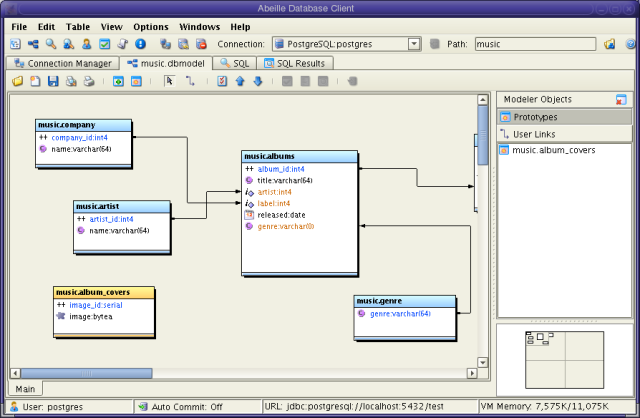
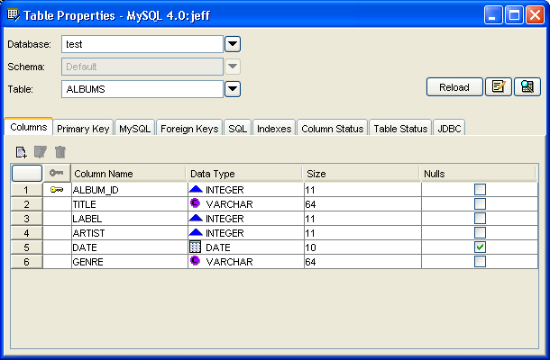

Modeler/Viewer
The Model View graphically displays tables as well as their relationships to other tables. The Model View is divided into two panes. The right pane contains a list of all tables that are currently being modeled (prototype tables) as well as all user defined links. The left pane graphically displays tables and their relationships. You can create multiple views in this pane. Existing tables are colored light blue. Prototype tables are colored yellow.
Existings tables can be added to
the view by drag and drop (or copy/paste) from the Table View as well
as by invoking the add table dialog. Additionally, users may create new
tables (prototype tables) in this view. A prototype table can be
created by invoking the New Table button on the toolbar. This will
display the Table Properties dialog which you can use to define the
columns for the table. Currently, Abeille does not support defining
constraints for table columns. Once a prototype table has been created,
it will be visible in the Prototypes list in the left pane. To save the
table to the database, you should select the prototype in the view and
press the commit button on the toolbar. If you want delete the
prototype without saving, right click on the table in the prototype
list and select the delete menu item.
Models can be saved to external
files. Abeille also has the ability to share model files between
connections.

| Save the current state of the modeler. | |
| Invokes the add table dialog. Allows the user to add an existing table to the view. | |
| Invokes the create table dialog. This allows the user to create a new table or edit the properties of an existing prototype table. | |
| The Mouse and Link Tools are mutually exclusive. If the mouse tool is selected, you can select, move, and resize a table. | |
| If the link tool is selected, you can drag links between columns of different tables. The type of link that is created between two tables depends on the type of tables. | |
| Invokes the Table Properties dialog. | |
| Invokes the Form View for the selected table. | |
| Runs a query ( select * ) against the selected table. | |
| Commits the selected prototype table to the database. Only a single table may be committed at a time. If a table has foreign key relationships, be sure to commit any dependent tables beforehand. |
Relationships between tables are indicated by a link connecting the two tables in the view. If the link is a solid line, then that relationship is based on a foreign key constraint. If the link is a dashed line, then that link is a user-defined link. If a link is dragged between two tables that exist in the database, a user link is created in the application. A user link is useful if you wish to display a relationship between two tables that don't have the relationship (foreign key) defined in the database. Also, some versions of MySQL do not support foreign keys, so user links would be useful here. User links also are supported in Table Form views and the Query Builder.
Iif a link is dragged to a prototype table (i.e. a table that is curren being modeled), a foreign key is automatically defined in the prototype.
This dialog allows you to inspect properties of existing tables. You can modify properties of prototype tables and view the properties for existing tables.

| Columns | Displays all columns in the table. Columns can be added, modified, and deleted |
| Primary Key | Displays the primary key for the table. You define the primary key in the Columns Tab. |
| Foreign Keys | Displays the foreign keys for this table. Foreign keys can be created and edited here. You can also create a foreign key by dragging a link from one table to another. |
| SQL | Displays the SQL used to create the table. |
| JDBC | If the dialog is for an existing table, this view shows the JDBC information for that table. |
| Exported/Imported Keys | For databases other than PostgreSQL and MySQL, the exported and imported keys for each table will be displayed. Abeille has advanced features for PostgreSQL and MySQL, so the interface will look slightly different for these databases. |